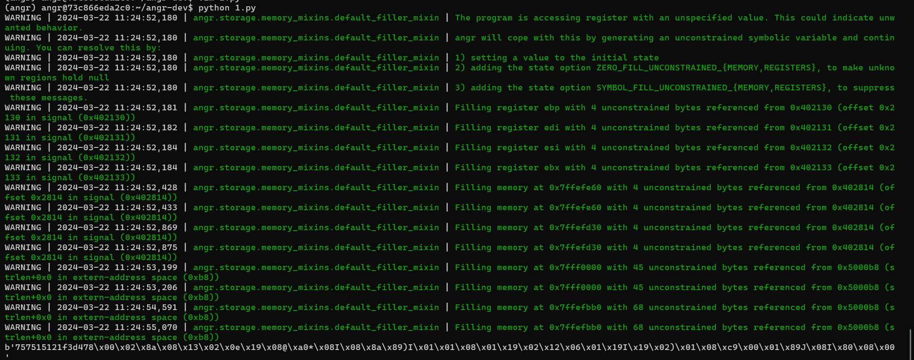

符号执行与angr
符号执行与angr
符号执行
符号执行（Symbolic Execution）是一种程序分析技术，可以通过静态分析程序来得到让特定代码区域执行的输入。同时，它是一种白盒的静态分析技术，即分析程序可能的输入需要能够获取到目标源代码的支持。
使用符号执行分析一个程序时，会使用符号值作为输入，而非一般执行程序时使用的具体值。笔者在学习的时候，感觉可以类比成概率论中的离散随机变量或者离散数学中的事件。在达到目标代码时，分析器可以得到相应的路径约束，然后通过约束求解器来得到可以触发目标代码的具体值。
angr
简介
angr是一个多架构二进制分析工具包，具有执行动态符号执行（如
Mayhem、KLEE
等）和对二进制文件进行各种静态分析的能力，是目前最好用的符号执行引擎之一，是逆向辅助分析的神器。
符号执行有两个基础：执行路径和符号，以下通过这两方面来学习。
执行路径：当程序读取文件的时候，我们需要将文件进行符号向量化当作我们的输入。我们需要创建一个SimFile对象，该对象是个模拟文件，然后将符号变量存放在模拟文件中并将模拟文件插入到state中，这样在模拟运行时，程序就会从我们模拟的文件中读取符号变量作为输入的参数进行后续的运行。
符号：当用户输入是从标准输入（stdin）中获得，比如简单调用scanf函数的时候，angr会自动注入符号进行符号化；然而，当用户输入更复杂，比如scanf函数的格式化字符串很复杂，或者从文件、网络或者UI中获取输入的时候，angr则不会自动注入符号，这时我们需要手动在需要的地方进行注入符号。angr中的符号是由bitvector（位向量）表示的，这一点与z3约束求解器类似，其实angr与z3在笔者看来有很多类似之处，都可以进行约束条件下的问题求解。
Angr 其实并不是真正被运行起来的，它就向一个虚拟机，会读取每一条命令并在虚拟机中模拟该命令的行为。我们类比到更加常用的 z3 库中，每个寄存器都可以相当与 z3 中的一个变量，在模拟执行的过程中，这个变量会被延伸为一个表达式，而当我们成功找到了目标地址之后，通过表达式就可以求解对应的初值应该是什么了。
安装
这里提供的是docoker安装方式
1 | #拉取docker镜像（注意名字是angr/angr） |
在ctf中的应用
简单re题
笔者学习angr主要是在ctf逆向题中应用，所以也没有深学，简单学习了一下流程，看了几位大佬的博客，主要掌握流程脚本
angr的一般流程，一把梭
1 | import angr |
反OLLVM
笔者也是学到一半才想到，之前在学习OLLVM的时候用的反混淆工具deflat就是基于angr框架的，拍脑袋一想，还真是~
符号执行不是就是去除控制流平坦化的绝佳办法之一吗！
利用angr符号执行去除控制流平坦化的步骤可以归结为三个步骤：
- 静态分析CFG得到序言/入口块（Prologue）、主分发器（Main dispatcher）、子分发器/无用块（Sub dispatchers）、真实块（Relevant blocks）、预分发器（Predispatcher）和返回块（Return）
- 利用符号执行恢复真实块的前后关系，重建控制流
- 根据第二步重建的控制流Patch程序，输出恢复后的可执行文件
VM
如果VM题目的算法逻辑比较简单，可以考虑直接用angr一把梭，但也不是全能的，如果出题人有意设置陷阱例如构造陷阱循环递归、有意复杂化控制流可能导致路径爆炸等问题，超出了符号执行可以解决的能力范围，这个时候还是老老实实手搓吧~
*流程原理介绍(搬的佬 的博客原文)
创建Project
1 | path_to_binary = "./00_angr_find" |
使用 angr的首要步骤就是创建Project加载二进制文件。angr的二进制装载组件是CLE，它负责装载二进制对象（以及它依赖的任何库）和把这个对象以易于操作的方式交给angr的其他组件。angr将这些包含在Project类中。一个Project类是代表了你的二进制文件的实体。你与angr的大部分操作都会经过它
auto_load_libs 设置是否自动载入依赖的库，在基础题目中我们一般不需要分析引入的库文件，这里设置为否
- 如果
auto_load_libs是True（默认值），真正的库函数会被执行。这可能正是也可能不是你想要的，取决于具体的函数。比如说一些libc的函数分析起来过于复杂并且很有可能引起path对其的尝试执行过程中的state数量的爆炸增长- 如果
auto_load_libs是False，且外部函数是无法找到的，并且Project会将它们引用到一个通用的叫做ReturnUnconstrained的SimProcedure上去，它就像它的名字所说的那样：它返回一个不受约束的值
设置 state
1 | initial_state = project.factory.entry_state() |
state代表程序的一个实例镜像，模拟执行某个时刻的状态，就类似于快照。保存运行状态的上下文信息，如内存/寄存器等,我们这里使用project.factory.entry_state()告诉符号执行引擎从程序的入口点开始符号执行，除了使用.entry_state()
创建 state 对象, 我们还可以根据需要使用其他构造函数创建 state
设置 Simulation Managers
1 | simulation = project.factory.simgr(initial_state) |
Project 对象仅表示程序一开始的样子，而在执行时，我们实际上是对SimState对象进行操作，它代表程序的一个实例镜像，模拟执行某个时刻的状态
SimState
对象包含程序运行时信息，如内存/寄存器/文件系统数据等。SM（Simulation
Managers）是angr中最重要的控制接口，它使你能够同时控制一组状态(state)的符号执行，应用搜索策略来探索程序的状态空间。
运行，探索满足路径需要的值
1 | print_good_address = 0x8048678 |
符号执行最普遍的操作是找到能够到达某个地址的状态，同时丢弃其他不能到达这个地址的状态。SM为使用这种执行模式提供了.explore()方法
当使用find参数启动.explore()方法时，程序将会一直执行，直到发现了一个和find参数指定的条件相匹配的状态。find参数的内容可以是想要执行到的某个地址、或者想要执行到的地址列表、或者一个获取state作为参数并判断这个state是否满足某些条件的函数。当activestash中的任意状态和find中的条件匹配的时候，它们就会被放到found stash中，执行随即停止。之后你可以探索找到的状态，或者决定丢弃它，转而探索其它状态。
获取执行结果
1 | if simulation.found: |
此时相关的状态已经保存在了simgr当中，我们可以通过simgr.found来访问所有符合条件的分支，这里我们为了解题，就选择第一个符合条件的分支即可
这里解释一下sys.stdin.fileno(),在UNIX中，按照惯例，三个文件描述符分别表示标准输入、标准输出和标准错误
1 | import sys |
所以一般也可以写成：
1 | solution = solution_state.posix.dumps(0) |
例题
[网鼎杯 2020 青龙组]singal
main函数逻辑简单，就是一个虚拟机逆向函数
找一下find和avoid
整个vm_operad函数只有这一处return，猜测是正确输出

find的地址是0x40175E，或者选择main函数中puts的地址也可

avoid的地址是0x4016E6
angr一把梭
1 | import angr |

[nkctf2024]REEZ

1 | import angr |
注意explore的条件不是地址，这个题没法用地址
1 | simgr.explore(find=lambda s: b"What can I say? You are so great!" in s.posix.dumps(1)) |
以下是chat给的各个参数的解释
让我们逐个解释这段代码中的各个参数的含义：
simgr: 这很可能是一个符号执行管理器（Symbolic Execution Manager）的实例，用于管理符号执行过程中的状态和路径。explore(): 这是符号执行管理器中的一个方法，用于探索程序的不同路径。find=lambda s: b"What can I say? You are so great!" in s.posix.dumps(1): 这是explore()方法的参数，是一个函数，用于指定符号执行时的条件。在这里，lambda s: ...是一个匿名函数，s是符号执行状态的一个变量。条件b"What can I say? You are so great!" in s.posix.dumps(1)指定了当符号执行状态s的标准输出中包含特定字符串时停止探索。s: 符号执行状态，代表程序执行过程中的一个状态。s.posix.dumps(1): 这部分是获取符号执行状态s的标准输出的内容。在这里，1表示标准输出文件描述符（stdout），s.posix.dumps(1)返回标准输出的内容作为一个字节串。b"What can I say? You are so great!" in s.posix.dumps(1): 这部分是条件，表示当特定字符串存在于标准输出中时，停止探索。
有参数脚本
1 | import angr |
约束求解
SMT
前面说了这么多，其实没有提到，如何求解约束条件下的问题呢？SMT就是重要的原理方法之一，z3、ida的Ponce插件就是用的SMT。
SAT（satisfiability）问题指的是命题逻辑公式的可满足性问题。但是
SAT 在表达能力上有很大的局限性，需要比
SAT更强的表达方式。在这种形势下，将SAT问题扩展为SMT，经过扩展，SMT
能比SAT
更好地表达一些人工智能和形式化方法领域内的问题，比如在资源规划、时序推理、编译器优化等很多方面用到了SMT。
SMT 的全称是 Satisfiability Modulo
Theories，可被翻译为“可满足性模理论”、“多理论下的可满足性问题”或者“特定（背景）理论下的可满足性问题”，其判定算法被称为
SMT 求解器。简单地说，一个
SMT公式是结合了理论背景的逻辑公式，其中的命题变量可以代表理论公式。
结语
本文非原创，前面也提到，笔者是学习re的过程中来了解一下的，主要是摘录了几位大佬的博客，详细内容没有学习完全，在这里附上链接: